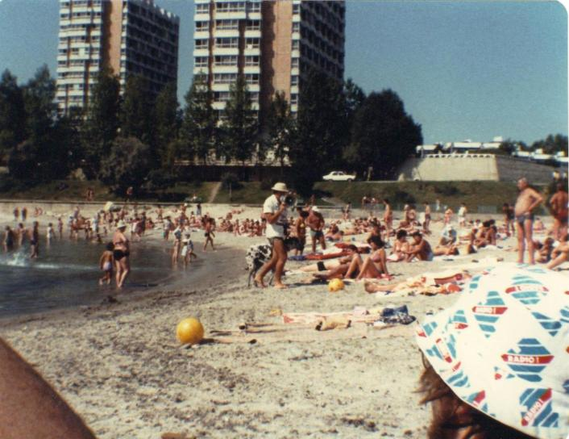

Inter Rail 1984 Day 12
Thursday 13th September 1984
Had a slightly uncomforable night but got more sleep than I expected to. The train emptied when we got to Constanta,
apparently the oldest living city in Romania, founded around 600 BC, the largest port on the Black Sea, and one of the largest ports in Europe.
From there on it was stop/start all the way along the line. At Mangalia we found that the left luggage place did not accept rucksacks so we
had to keep them with us.

Thought of catching one of the landrover/car trains to one of the resorts administered by the local municipality (Jupiter, Venus etc) but in
the end stayed in town and got to the beach in about 5-10 minutes. A bitty type of sand with lots of shells and things in. It was deserted at
8.40am in the morning so we picked a prime spot and settled in for the day.
By 10.00am we could have been in Torremolinos or Palma. The sea (the Black one) tasted a bit of hydrogen sulphide and wasn't at all salty
tasting but you got used to it. We had to take it in turns swimming as one of us had to mind the moneybelts etc. It got bloody hot. Both of us
copped it a bit with the lobster impressions. Decided to pack up about 2.00pm.
Tried to get rid of our money. Had a nice lunch. Soup, bread, meatballs in sauce and mashed potatoes with salad. Bought wine and coffee but
couldn't find anything else to spend the money on. Stood in a queue to get our ticket stamped and the man just buggered off for a while as we
got to the front. We paid 16 lei for a reservation. We also paid 1 lei to go swimming in the loos. I did get 2 sheets of loo paper for my
troubles.
Our train was leaving from "platform" 4. Due to the lack of actual platforms as we know and love in the West, we had to climb through the
train on "platform" 3 to get to our "platform". Our train back to Constanta took us past a couple of nudists camps which were overlooked by
the main railway line. Much playing of volleyball spotted!! We were also treated to musak. i.e. foreign, western music blasted into the
comparments and corridors on a regular basis. We particularly enjoyed the irony of them playing Queen's "I want to break free". It was a very
popular train. There were more people in the corridors either sitting, standing on on their way to/from the buffet car than in the compartments.
All hell let loose when we arrived in Constanta as we found that our reservation only entitled us to be on the train, other people had
actually got the seat reservations. Had a bit of a rant and then sat truculently in the corridor. Sat or stood in the corridor and read all
the way to Bucharest. We got the last laugh. There were lights in the corridor but none in the compartments.
At Bucharest we had an hour to get out tickets and reservations. We eventually found the ticket office and then discerned the right melee to
stand in. Jon tried to spend some more money. I pushed and shoved my way to the counter. Got our tickets stamped but they would not give us a
reservation. There were only 1.5 compartments going all the way to Beograd. They were all full. Even 1st class was full.
When the ticket collector saw we had no reservation he charged us 90 lei each. We thus paid £4.50 for the priviledge of sleeping in the corridor.
A major huff ensued with Romania suffering. Sat in the corridor with a pack of cards and a bottle of wine with toasting of imminent Romanian
downfall being very prominent. Bedded down in the corridor about midnight. Turned out to be a relatively undistubed sleep.